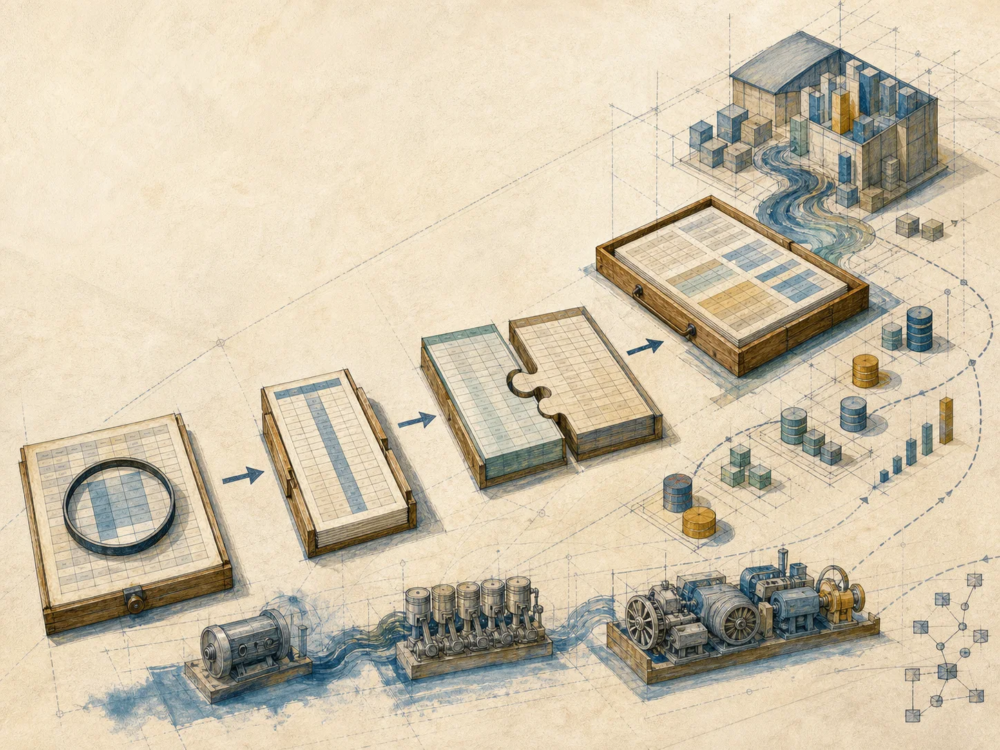
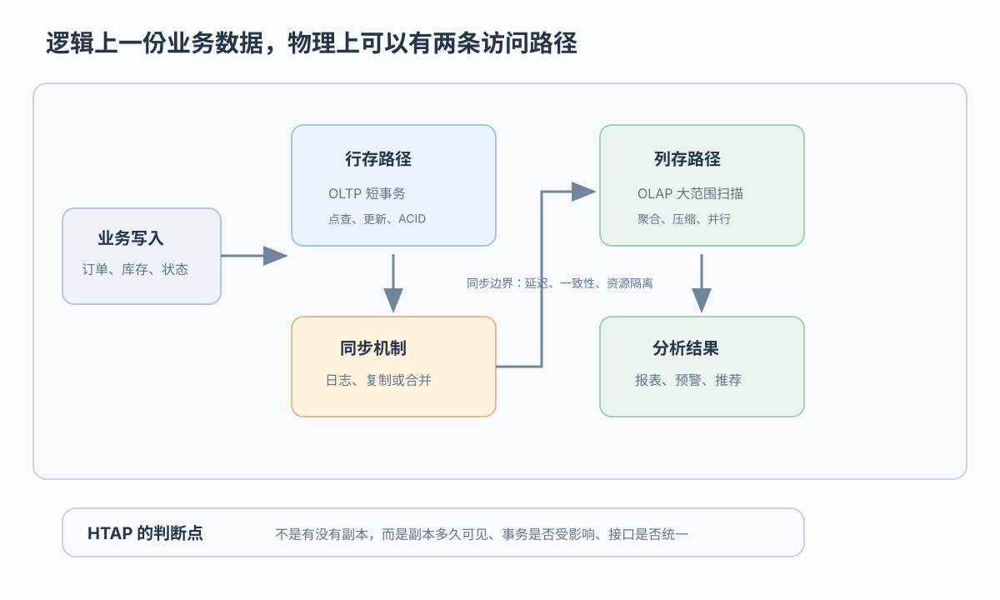
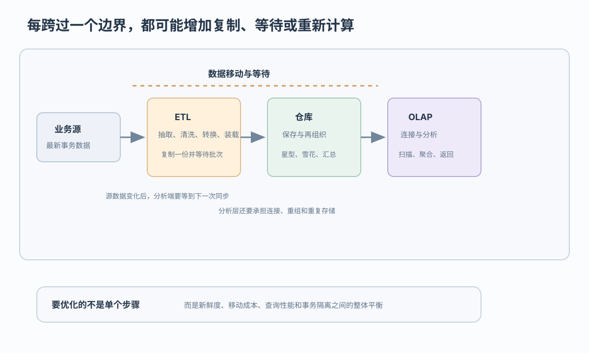

OLTP 加 OLAP
订单进入事务系统，再经 ETL 或复制进入仓库；地区报表会晚于事务提交

订单刚提交，分析报表什么时候能看见
 VER. 2608
Built with impress.js
VER. 2608
Built with impress.js
围绕“订单多久进地区报表”：写清经过的系统、最长等待、怎样不拖慢下单
10:00:00 订单提交成功，10:00:20 地区销售报表仍没有这笔订单

逻辑上，HTAP 用同一套数据库软件和统一 SQL 接口，在同一业务数据上同时支持事务与分析
物理上，系统仍可以维护行存、列存或其他副本，因此分析可见时间仍要检查
写订单按行，汇总多年销售按列；同一系统仍有转换、同步、资源争用
| 负载 | 典型组织 | 主要取舍 |
|---|---|---|
| 写入一笔订单 | 行存储 | 便于按记录点查和更新；扫描大量订单可能较慢 |
| 汇总地区销售 | 列存储 | 便于扫描、压缩和并行；更新或格式转换有成本 |
| 写入与汇总并存 | 行列混合组织 | 少跨一个系统，但仍要处理转换、同步和资源竞争 |
事务系统写订单，分析系统做汇总；两边怎样同步成为新的问题
订单进入事务系统，再经 ETL 或复制进入仓库；地区报表会晚于事务提交
订单表留在关系数据库，点击日志进入大数据平台；接口和字段含义要另外对齐
两种路线都要处理副本同步、故障恢复和统一查询入口
多引擎保留专业组件，也增加了数据移动和接口维护
同一个销售主题开始同时接收订单表、点击日志和商品图片
订单和访问记录从 TB 增长到 PB，单机扫描时间和存储成本上升
结构化订单、半结构化点击日志和非结构化商品图片需要不同处理方式
除了销售报表，还要做预测、关联和 what-if 分析
下单高峰与全量销售扫描同时发生，二者会争用处理器、内存和带宽
短事务持续写入订单，长查询同时扫描历史销售
多核、大内存和高速网络可以加速处理，但不能替系统决定谁先使用资源
硬件提供并行能力，系统仍要隔离短事务与长查询
跟着一笔订单走过业务源、ETL、仓库和 OLAP，就能找到等待发生在哪里

订单先在事务系统提交
ETL 等待批次，再复制和转换订单
仓库重组主题数据，OLAP 建立汇总结构
地区报表读取分析端当前可见的数据
一个新字段会从订单源一路传到地区销售分析
不能只检查订单复制要等多久；新增一个字段时，源系统、ETL、仓库和报表分别要改什么也要算进去
订单表留在关系仓库，点击日志进入大数据平台，连接器负责交换数据
| 想解决什么 | 常见做法 | 随之出现的问题 |
|---|---|---|
| 数据超过一台机器容量 | 分布式和并行平台 | 节点之间要协调，节点损坏后要恢复 |
| 下单和报表同时运行 | 行存、列存或多副本 | 要防止长查询拖慢下单，还要同步副本 |
| 两个平台一起查询 | 连接器和统一 SQL | 数据传输占带宽，字段含义还要人工对齐 |
| 新订单尽快进报表 | 就地分析和缓存 | 必须说明最多晚多久，以及查询占用多少资源 |
连接器可以搬运数据，但不会自动统一字段含义或保证副本一致
| 场景 | 先写出的具体要求 | 先考虑哪种组合 |
|---|---|---|
| 新订单一分钟内进入地区报表，同时不能拖慢下单 | 最多等待 1 分钟；长查询不得拖慢订单提交 | 单引擎／多引擎／继续核对 |
| 夜间生成一次销售报表，现有仓库运行稳定 | 次日上班前可见；尽量少改现有系统 | 单引擎／多引擎／继续核对 |
| 订单表与点击日志联合分析，两个平台都要保留 | 对齐字段含义；计算要传输多少数据 | 异构共存／其他／继续核对 |
先写订单最晚几点出现在报表、报表能否占用下单资源、数据要复制几次，再选择系统组合
任选一项：写等待上限、经过系统、不拖慢下单方法，以及另一组合为何不行
写明订单何时提交、最晚何时出现在报表、同步失败时页面显示什么；不能只写“实时”
画出行存、列存、副本、ETL 或连接器，标明在哪一步等待、重复计算，以及“销售额”等字段在哪里改写
说明长查询最多能占多少处理器、内存或带宽，分析端能读到哪次提交，以及同步失败后由哪个系统恢复
在单引擎、多引擎或异构共存中选择一个，指出另一方案会让报表晚多久、复制多少数据或多维护哪些接口